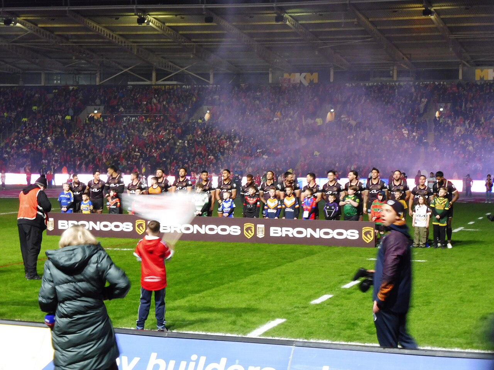
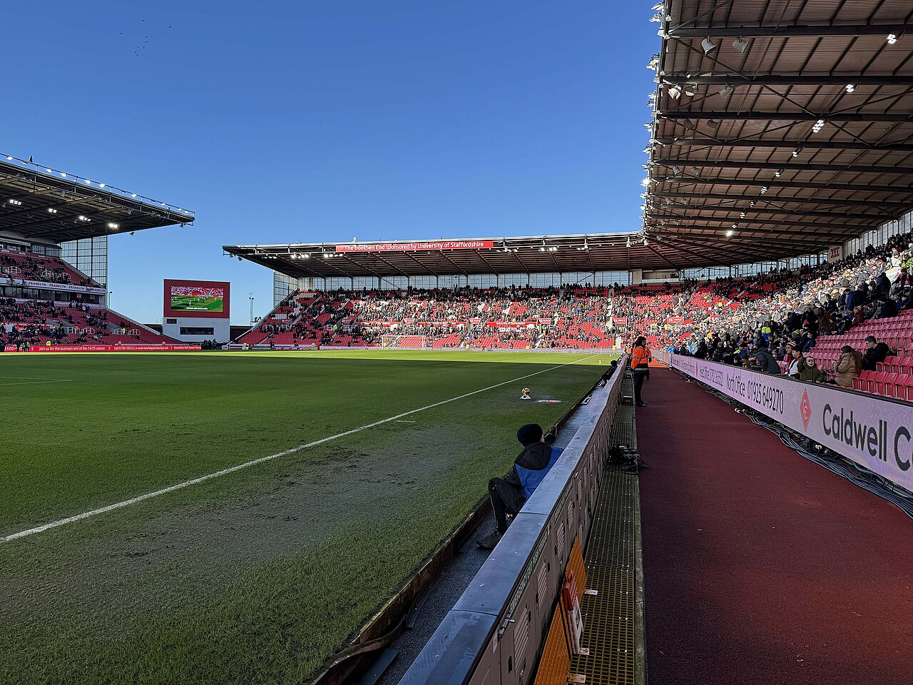

Brisbane Broncos
NRL 2026 · Men finished 14th · NRLW runners-up · Seven Broncos at the World Cup
Photo: Hullian111 / Wikimedia Commons source · Creative Commons Attribution-ShareAlike 4.0 International (CC BY-SA 4.0) · Resized; no crop.

Latest Broncos result — the NRLW grand final
Lost by 24 · Sun 4 Oct · Accor Stadium, Sydney · NRLW Grand Final · 0–26 at half-time · Crowd 47,451
NRLW finals 2026
The men's last six of 2026 — the historical record
The Suncorp ledger — the whole men's season in one table
| Split | P | W | L | Win % |
|---|---|---|---|---|
| Home fixtures (all at Suncorp) | 12 | 2 | 10 | 16.7 |
| Away fixtures | 12 | 6 | 6 | 50.0 |
| … of which, played at Suncorp | 2 | 0 | 2 | 0.0 |
| Total appearances at Suncorp | 14 | 2 | 12 | 14.3 |
Carried forward from the previous edition’s match-by-match review, because two true numbers were in circulation and looked contradictory. AAP's review coverage said Brisbane lost 12 of 14 at Suncorp; this page runs 2–10 at home. Both are right: Brisbane played two further games at Suncorp that were not home fixtures — the Warriors in Magic Round (Round 11) and the Dolphins in Round 23, which was Redcliffe's home game. They lost both. The club's own season review put it the same way as AAP — “lost 12 of 14 at Suncorp” — and made home form one of five stated priorities for 2027. On Friday, Suncorp hosted a preliminary final that Brisbane were not in and Redcliffe lost.
2026 by the numbers
The tile that belongs at the top of this list and has never been on this page: Brisbane went into 2026 as the reigning premiers. Michael Maguire won the 2025 title — only the second coach in the club's history to do it — and the following season the same club finished 14th and conceded 28.2 points a game. Every number above reads differently once that is in front of them.
Final 2026 ladder
| # | Team | Pts | +/− |
|---|---|---|---|
| 1 | Panthers · out, prelim | 42 | +336 |
| 2 | Warriors · out, semi-final | 42 | +310 |
| 3 | Dolphins · out, prelim | 40 | +156 |
| 4 | Roosters · PREMIERS | 38 | +118 |
| 5 | Sharks · out, semi-final | 34 | +149 |
| 6 | Rabbitohs | 34 | +113 |
| 7 | Knights · runners-up | 34 | +42 |
| 8 | Cowboys | 32 | −84 |
| · · · finals cut-off · · · | |||
| 9 | Sea Eagles | 28 | +99 |
| 10 | Storm | 28 | +18 |
| 11 | Raiders | 28 | −45 |
| 12 | Bulldogs | 28 | −60 |
| 13 | Eels | 24 | −181 |
| 14 | Broncos | 22 | −206 |
| 15 | Wests Tigers | 22 | −254 |
| 16 | Titans | 18 | −186 |
| 17 | Dragons | 16 | −325 |
Final ladder carried forward from the previous edition. Brisbane’s 14th place, 8–16 record and 471–677 points tally were checked against Rugby League Project; the other clubs’ full figures have not been independently re-audited in this review.
The finals — how they finished
| When (AEST) | Match | Result / Venue |
|---|---|---|
| Fri 11 Sep | Rabbitohs v Knights (EF) | Knights won 20–10 · Allianz |
| Sat 12 Sep | Warriors v Dolphins (QF) | Dolphins won 26–16 · Go Media |
| Sat 12 Sep | Sharks v Cowboys (EF) | Sharks won 26–16 · Allianz · 17,429 |
| Sun 13 Sep | Panthers v Roosters (QF) | Panthers won 19–12 · CommBank |
| Sat 19 Sep | Roosters v Sharks (SF) | Roosters won 46–10 · Allianz |
| Sun 20 Sep | Warriors v Knights (SF) | Knights won 12–10 · Eden Park |
| Fri 25 Sep | Dolphins v Roosters (PF) | Roosters won 36–20 · Suncorp · 52,286 |
| Sat 26 Sep | Roosters v Raiders (NRLW PF) | Roosters won 20–10 |
| Sun 27 Sep | Titans v Broncos (NRLW PF) | Broncos won 20–8 · Robina · 7,372 |
| Sun 27 Sep | Panthers v Knights (PF) | Knights won 22–14 · Accor · ~55,000 |
| Sun 4 Oct, 3:00pm | Roosters v Broncos (NRLW GF) | Roosters won 30–6 · Accor · 47,451 |
| Sun 4 Oct, 6:30pm | Roosters v Knights (NRL GF) | Roosters won 19–18 · Accor · 80,814 |
All times AEST; results and crowds from NRL.com's match data. The Roosters won both grand finals. The men's decider went to a Daly Cherry-Evans field goal on 69 minutes: Newcastle led 12–0 through Francis Manuleleua and Kalyn Ponga, the Roosters scored 19 unanswered, and Greg Marzhew's try and Sandon Smith's conversion on 76' left the Knights a point short. James Tedesco won the Clive Churchill Medal; ABC reports it was Cherry-Evans's final NRL game. Dane Gagai, a Bronco from 2027, was on the losing side — the day after the IRL cleared him to switch his international allegiance to New Zealand.
NRLW 2026 — how the ladder finished
| # | Team | W–L | Pts |
|---|---|---|---|
| 1 | Roosters · PREMIERS | 11–0 | 22 |
| 2 | Titans · out, prelim | 10–1 | 20 |
| 3 | Broncos · runners-up | 8–3 | 16 |
| 4 | Wests Tigers · out, week 1 | 7–4 | 14 |
| 5 | Raiders · out, prelim | 6–5 | 12 |
| 6 | Knights · out, week 1 | 5–6 | 10 |
Top six only, now taken from the NRL's own ladder. Corrected this edition: the previous two editions had Gold Coast 9–1, Brisbane 7–3 and Newcastle 5–5, and explained the gap by saying Brisbane had played ten games to the Roosters' eleven. That was wrong — every club played eleven. The official figures are Titans 10–1 (20 points), Broncos 8–3 (16) and Knights 5–6 (10), and AAP's account agrees: Brisbane lost three in a row up to a 28–20 defeat by the Titans in round 8, then won their last three and both finals. The one regular-season meeting with the Roosters was round 7, lost 34–20. Week 1 of the finals: Raiders 6 Wests Tigers 0, Broncos 40 Knights 16.
Worth knowing
- The women's season ends a game short, against the best side the competition has produced. Brisbane lost 30–6 to a Roosters team that went 13–0, and by half-time the score was 26–0. Upton, Southwell and Robinson are all still there, and so is the core of a squad that reached a fifth grand final in nine seasons. The defence of the 2025 title ended at the last step, which is a long way further than the men's defence got.
- Ali Brigginshaw has played her last game. Five-eighth in her fifth NRLW grand final at 38, after winning the first four, she finishes with a loss and a place on report for a tackle on Tarryn Aiken — not the ending anybody would write, and a long way from the measure of the career. ABC counted her, Julia Robinson and Chelsea Lenarduzzi as Brisbane's three “OGs”, at the club since 2018. Next year is the first NRLW season Brisbane will play without her. The next morning she was left out of the Jillaroos' World Cup squad, with Isabelle Kelly taking the captaincy, so the grand final looks to have been her last game.
- The Roosters also won the men's decider, 19–18, and Brisbane's new centre was on the wrong side of it. Newcastle led 12–0 after half an hour, the Roosters scored 19 straight, and a Daly Cherry-Evans field goal on 69 minutes turned out to be the margin when the Knights scored late. Dane Gagai, who joins Brisbane for 2027, played for Newcastle the day after being cleared to represent New Zealand. James Tedesco won the Clive Churchill Medal — which matters here because he is the man Reece Walsh is competing with for the Kangaroos jersey.
- Jordan Riki is the second Brisbane forward on the 1 November clock, and the club has confirmed the rule this page argued about for three editions. Riki is on a reported $500,000 and off contract at the end of 2027 — the same position as Willison. Reports of a falling-out with Maguire over training methods were denied by head of football Troy Thomson: "I haven't spoken to Jordan directly, but I'm not aware of anything that's been reported… so that's news to me", adding "he can't talk to anyone until November 1, we haven't given him permission to talk." That is the club stating the rule out loud: final twelve months, 1 November 2026. The reported motive is money rather than grievance — comparable second-rowers are signing for $850,000 to over $1m. The Warriors are linked, with Kurt Capewell expected to retire after 2027.
- Xavier Willison: still unsigned, now a Kiwi at the World Cup, 20 days to go. Nothing has been announced since the player-of-the-year night on 14 September. The reported deal is four years to 2031 at around seven figures, funded by the Haas cap space, expected to be agreed before players return from leave even if the announcement lags. He is in New Zealand's squad, so the tournament could open with him packing down against three of his club teammates.
- Brisbane have signed Manly's head of performance. Jon Clarke joins for 2027 after three seasons under Anthony Seibold at Manly, with prior roles at Warrington, English rugby union and the British & Irish Lions, and a reputation for demanding fitness standards. Troy Thomson: "JC has worked at the highest levels of rugby league and rugby union, and brings a depth of experience that will be valuable to our entire football program." For a side that conceded 28.2 points a game, a hard-edged performance appointment is not decoration.
- Membership prices are up, and fans have noticed. Fans quoted by News Corp (via Zero Tackle) say their membership has gone from $250 to $395 for 2027, after a season that ended one place above the bottom three. Chief executive Dave Donaghy: "Some prices are changing as discounted offers finish or packages change, but membership remains the best value way to watch the Broncos at Suncorp Stadium," adding that a new member can get a reserved seat for all 12 home games for under $300. Twelve home games at 2–10 last year is a hard sell at any price; the club is betting on 2027 being different.
- Reece Walsh made the Kangaroos’ 23, and says he is there to learn. Kevin Walters named his squad on Monday 5 October, a couple of hours after last week's edition, with three Broncos: Walsh, Pat Carrigan and Kotoni Staggs. Walsh is fit after his August ankle surgery but behind James Tedesco, a Clive Churchill medallist a day earlier: "I wish I could be half the player that 'Teddy' is," he told Fox Sports, while adding that he is confident in his own ability. Lindsay Collins has since withdrawn injured, replaced by Lindsay Smith. Mitch Barnett, a Bronco from 2027, missed selection. The squad is 23 plus three shadow players — not the 24 this page had expected.
- Payne Haas will not play at the World Cup. For two editions this page carried two reports pointing opposite ways. Samoa's final 23 does not include him (Zero Tackle's list of all ten squads), which settles it on the side of the Yahoo report that he would have his finger surgery instead and be ready for South Sydney in 2027.
- Seven Broncos are at the World Cup, per Zero Tackle's list of all ten squads: Carrigan, Staggs and Walsh (Australia), Xavier Willison (New Zealand), Deine Mariner (Samoa), Ben Talty (England) and Tupou Francis (Lebanon). Recruit Dane Gagai is with New Zealand. In the Jillaroos are Tamika Upton — a third Dally M already in her pocket — Jesse Southwell and Julia Robinson.
Two players on one clock, a grand final in numbers, and a World Cup on Sydney time
NRLW: runners-up · 6–30Men's season over · 14th · 8–1620 days to 1 NovemberStep 1 — the free-agency clock, now with a second name on it and independent confirmation. This page spent three editions getting this rule right, so here is the chain and the corroboration:
v8 had 1 November 2026. v9 “corrected” it to 2027 by inverting the rule. v10/v11 restored 2026 and showed the working. This week Brisbane's own head of football said the date out loud about a different player in the identical contractual position, which is as close to settled as a fan page gets. The point of the date has also changed shape: it is not one negotiation, it is two, under three weeks out, in the same position group.
Step 2 — what 2027 actually requires. An illustrative comparison using the 2026 structure, not a confirmed 2027 schedule. The NRL pays two competition points a win plus two for each of three byes, so a season converts cleanly:
The shape has not changed and it still cuts both ways. Going from the worst home record in the competition to a merely ordinary one only reaches the edge of the eight on this year's numbers — that is how far 2026 fell. But it is five wins, not fifteen, and the away half already happened: 6–6 on the road is a mid-table team, managed with an injured fullback, a retiring halfback and a defensive brief that changed hands in July. Keeping the two forwards on the November clock is the cheapest five-wins-worth of improvement available — and the club has now spent on a head of performance as well.
Step 3 — the grand final, scored from NRL.com's timeline.
Brisbane won the second half, which is not nothing and is not much. The goal-kicking is worth noting too: the Roosters converted one of seven tries and still won by 24.
Step 4 — the World Cup clock, because the venue prints Sydney time.
The honest summary. Brisbane's 2026 is finished on the field, and the off-season is going about as well as it can: seven current players at a World Cup, three of them Kangaroos, and three Broncos women in the Jillaroos. The two contract questions that matter most are still open with 20 days left before rival clubs can call, and Payne Haas's last act as a Bronco was surgery rather than a World Cup. None of it undoes 14th, but a Brisbane fan can watch Thursday night with a clear rooting interest on both sides.
Ins and outs — Broncos
Five listed arrivals for 2027, unchanged this week; not re-verified this edition. The NRL's own signings tracker, updated 25 September, lists four of them (Pezet, Barnett, Gagai, Blore) and no new Brisbane business; De Courcey and Coric are carried here from club and press reports. Destinations are not assumed when unannounced.
↘ Joining for 2027
- Mitch Barnett Confirmed
Back-rower from the Warriors, contracted through 2029. The headline forward recruit to replace Haas's minutes, if not his impact. Missed selection for Australia's World Cup squad. - Jonah Pezet Confirmed
Halfback from Parramatta through 2029 — the Reynolds succession plan, and likely to be coached by Reynolds himself. - Shawn Blore Confirmed
Back-rower from Melbourne, contracted through 2028. - Dane Gagai Confirmed
Centre from Newcastle, one year, through 2027. Played in the Knights' 19–18 grand-final loss; cleared by the IRL on 3 October to switch to New Zealand, and named in their World Cup squad. - Wilson De Courcey Confirmed
Outside back, 20, from Newcastle on a two-year deal to 2028. 14 tries in 17 NSW Cup games in 2026.
↗ Leaving
- Adam Reynolds Confirmed — retired
323 NRL games, no final and no farewell match in 2026. Joins the coaching staff in 2027, role still being defined. - Payne Haas Confirmed
To South Sydney, 2027–2029, reported at $3.6m over three years. Finger surgery; not in Samoa's World Cup squad. - Jaiyden Hunt Confirmed — new
To Canberra, two years, reported $350,000. Announced 14 September. Was on last week's "undecided" list. - Jack Gosiewski Confirmed — leaving
Contract not renewed. No destination reported. Also moved off last week's "undecided" list, halfway. - Corey Jensen Confirmed — retired
Retiring rather than moving on. - Jesse Arthars, Gehamat Shibasaki, Grant Anderson, Joshua Coric Confirmed
Arthars to Catalans Dragons, Shibasaki to the Perth Bears, Anderson to the Warriors, Coric to Hull FC on a two-year deal. - Delouise Hoeter Confirmed — retired
Farewelled as a retiring player at the club awards on 14 September. - Josh Rogers, Ben Te Kura Confirmed — departing
Both acknowledged as departing in the club’s awards announcement. Destinations not verified in this review.
Xavier Willison and Jordan Riki are on neither list, and belong in the same paragraph now. Both are contracted for 2027; neither has an early release. Both may be formally approached by rival clubs from 1 November 2026. Willison is reported to be in advanced talks on a deal to 2031 at around seven figures and has said publicly he wants to stay. Riki, on a reported $500,000, is expected to test a market where comparable second-rowers are getting $850,000 to over $1m; the club has denied a rift with Maguire and confirmed he has not been given permission to talk. The Warriors are the club linked. Neither situation is resolved, and nothing here is a signing.
Coaching and football staff for 2027, since it is movement even if it is not players: Jon Clarke in as head of performance from Manly (new this week); Matt Ballin confirmed as defensive coach after taking the brief in July; Ben Te'o out, to Queensland; Trent Barrett stays on attack; Adam Brideson stays in development with a new hire to support him; Troy Thomson up to executive general manager of football; Dave Pallard up to general manager; Adam Reynolds joining the staff in a role still being defined.
Stoke City
EFL Championship · P9 W5 D1 L3 · 4th, 16 points · Unbeaten in six
Photo: Steve Daniels (Geograph) / Wikimedia Commons source · Creative Commons Attribution-ShareAlike 2.0 Generic (CC BY-SA 2.0) · Resized; no crop.

Latest result — ten men, two goals, a first win at Bolton since 1990
Won 2–1 · Sat 10 Oct · Toughsheet Community Stadium · Championship MD9 · 1–0 up at half-time · Crowd 26,018
Last six competitive games
Season so far — competitive
| Date | Opponent | Comp | Result | Crowd |
|---|---|---|---|---|
| 8 Aug | Oldham Athletic (H) | Carabao R1 | W 2–0 | 10,157 |
| 15 Aug | Swansea City (H) | Championship | L 1–2 | 24,332 |
| 22 Aug | Southampton (A) | Championship | L 1–3 | 29,185 |
| 25 Aug | Hull City (H) | Carabao R2 | D 1–1, lost 4–5 pens | 7,141 |
| 29 Aug | Wolves (A) | Championship | L 1–4 | 30,334 |
| 1 Sep | Norwich City (H) | Championship | W 1–0 | 20,140 |
| 5 Sep | Charlton Athletic (H) | Championship | W 4–0 | 21,071 |
| 8 Sep | Cardiff City (A) | Championship | D 1–1 | 18,088 |
| 12 Sep | Watford (A) | Championship | W 2–1 | 18,296 |
| 19 Sep | Sheffield United (H) | Championship | W 2–1 | 23,360 |
| 10 Oct | Bolton Wanderers (A) | Championship | W 2–1 | 26,018 |
Eighteen scored and fourteen conceded across eleven competitive games; twelve of those eighteen came in the last six league games. Stoke's four home league crowds average 22,226; the five away grounds visited average 24,384. The Bolton line is from Opta's match data (via Sporting Life) and Wikipedia's season page, which agree on the score, the scorers and the crowd; the earlier lines were re-checked against Football Web Pages on 28 September.
Championship — after nine games
| # | Team | P | GD | Pts |
|---|---|---|---|---|
| 1 | Swansea City | 9 | +8 | 20 |
| 2 | Middlesbrough | 9 | +5 | 18 |
| 3 | West Ham United | 9 | +11 | 16 |
| 4 | Stoke City | 9 | +2 | 16 |
| 5 | Wolves | 8 | +4 | 14 |
| 6 | QPR | 9 | +3 | 14 |
| 7 | Birmingham City | 9 | +2 | 14 |
| 8 | Millwall | 9 | +1 | 14 |
| Play-offs: 3rd–8th · automatic promotion: 1st–2nd | ||||
| 9 | West Bromwich Albion | 9 | +1 | 14 |
| 10 | Bristol City | 9 | −1 | 14 |
| 11 | Southampton (−4) | 9 | +10 | 13 |
| 12 | Charlton Athletic | 9 | −3 | 13 |
| 13 | Blackburn Rovers | 9 | +1 | 12 |
| 14 | Sheffield United | 9 | +1 | 12 |
| 15 | Wrexham | 9 | −3 | 11 |
| 16 | Lincoln City | 9 | −4 | 11 |
| 17 | Bolton Wanderers | 9 | −5 | 10 |
| 18 | Norwich City | 9 | −2 | 9 |
| 19 | Portsmouth | 8 | −2 | 8 |
| 20 | Watford | 9 | −7 | 8 |
| 21 | Cardiff City | 9 | −3 | 7 |
| Relegation: 22nd–24th | ||||
| 22 | Burnley | 9 | −4 | 7 |
| 23 | Derby County | 9 | −7 | 6 |
| 24 | Preston North End | 9 | −8 | 4 |
Rebuilt this week from the previous table plus all twelve matchday-9 results (Sky Sports), then reconciled against BBC Sport's published table on 12 October: every one of the 24 rows matches on played, won, drawn, lost, goals and points, and every position matches. Stoke are 4th, inside the 3rd–8th play-off band, two points off the automatic places and two clear of 9th. Six clubs share 14 points from 5th to 10th, so the cushion is thinner than the position looks. Southampton’s four-point deduction is still applied; Wolves and Portsmouth still have a game in hand.
Next five fixtures
| Date (UK) | AEST | Opponent | H/A |
|---|---|---|---|
| Tue 13 Oct, 8:00pm | Wed 14 Oct, 5:00am | Middlesbrough (2nd) | Home |
| Sat 17 Oct, 3:00pm | Sun 18 Oct, 12:00am | Derby County (23rd) | Away |
| Sat 24 Oct, 3:00pm | Sun 25 Oct, 12:00am | Bristol City (10th) | Home |
| Sat 31 Oct, 12:30pm GMT | Sat 31 Oct, 10:30pm | Preston North End (24th) | Home |
| Tue 3 Nov, 7:45pm GMT | Wed 4 Nov, 5:45am | Blackburn Rovers (13th) | Away |
All five match BBC Sport’s fixture lists (checked 12 October); positions are as at 12 October. Every conversion was computed with a time-zone database: BST ends at 2am on Sunday 25 October, so Bristol City on the 24th is the last game at +9 hours and Preston on the 31st the first at +10. Middlesbrough at 5:00am and Blackburn at 5:45am are the price of following an English club from Brisbane; Preston at 10:30pm on a Saturday is the reward.
Worth knowing
- Fourth, and earned the hard way. Five wins in six and unbeaten in six league games, the last of them with ten men for 70 minutes, away to a Bolton side Stoke had not beaten in Bolton since 1990. The numbers say Bolton should have won it — 30 shots, 3.13 expected goals — and the table says Stoke are fourth. Both are true; only one of them is worth points.
- A correction, and a gold medal. Every edition since 31 August — including the last two, produced by this page's new weekly checks — has listed Bae Jun-ho as a confirmed permanent departure to Olympique Lyonnais. He did not go anywhere. He was on Stoke's bench at Bolton (Opta line-ups via Sporting Life), Wikipedia lists him as Stoke's number 10 with five league appearances this season, and its record of the club's summer departures does not include him. Better still, he headed South Korea's 82nd-minute winner against China in the Asian Games semi-final on 30 September, and South Korea beat Japan 1–0 in the final on 3 October. Stoke's number 10 is an Asian Games gold medallist, which is more than this page had noticed.
- Luke Graham went from Scotland debutant to Stoke starter. After his debut in North Macedonia on 3 October, Scotland lost 2–1 to Slovenia at Hampden on the 6th; this page found no report saying whether he played. He started at Bolton four days later.
- Bosun Lawal is back in the squad, named on the bench at Bolton after his hamstring rehab and the international window.
- September's nominations. Robins was shortlisted for the Championship's Manager of the Month, and both late goals against Sheffield United — McGlynn's and Gallagher's — were nominated for Goal of the Month, according to Wikipedia's season page. This page has not found the winners.
- The Southampton swing is now eight places. They beat Portsmouth 1–0 on Sunday: their 17 points on the pitch would make them 3rd; with the four-point deduction they are 11th. Worked in the panel below.
Squad shape
- Ethan Galbraith — three goals in nine league games and the pass for Cissé's opener at Bolton. Still the best thing about the summer rebuild.
- Viktor Johansson — four conceded in the last six league games after nine in the first three, with two clean sheets (Norwich, Charlton). Kept Bolton to one goal from 30 shots.
- Lamine Cissé — started at Bolton and scored his first goal of the season. Not one of this summer's arrivals: he was already in the squad and scored in July's friendlies.
- Ben Wilmot — the headed second at Bolton, from a McGlynn free-kick.
- Jack McGlynn — two goals and the Bolton assist since arriving on deadline day.
- Luke Graham — 22, a Scotland international, and a starter at Bolton. The quietest good decision of the summer.
- Ben Pearson — 31, in his final contract year, and on the bench at Bolton. The January watch item.
- The absent — Sam Gallagher, Aaron Cresswell and Svante Ingelsson were not among the 20 named at Bolton; this page found no reason given for Gallagher. Junior Tchamadeu, Bosun Lawal, Bae Jun-ho and Róbert Boženík were on the bench. Ato Ampah has made no appearance this season, per Wikipedia's squad statistics.
Nine games in — fourth place, rebuilt from the results
The Championship changed for 2026/27: 3rd–8th qualify for the play-offs. Third and fourth advance to the semi-finals; fifth hosts eighth and sixth hosts seventh in eliminators. The top two still go up automatically. EFL format announcement.
Step 1 — rebuild Stoke's row from the nine league results rather than copying the published table. This is the check that catches a misread ladder:
Stoke occupy a play-off place, two points off the automatic ones. Nine matches is still a small sample and no points target guarantees anything — six clubs are level on 14 points from 5th to 10th, which is another way of saying that a bad week drops a team four places.
These are planning benchmarks only. The old sixth-place cut-off is no longer the qualification line, and neither 74 nor 50 is a guaranteed threshold.
Step 2 — Southampton's deduction, recomputed on a table that finally moved.
The swing shrank by one place this week because Southampton won and the clubs around them took points off each other. On raw points they would be 3rd, a point behind Middlesbrough; as published they are 11th on 13.
The honest version. Fourth is real, and so is the asterisk: Bolton out-shot Stoke 30 to nine and created three goals' worth of chances. A team does not stay fourth by being out-created that badly, and this one mostly has not been: the last six league games brought five wins, a draw and only four goals conceded. Middlesbrough on Tuesday is Stoke's first game against a side above them in the current table since Swansea on the opening day, a 2–1 defeat. That is the next real evidence. Until then, enjoy it.
Ins and outs — Stoke City, window closed
Window summary carried forward with one correction this week: Bae Jun-ho moves from the departures to the “stayed” list, because he never left. Eleven names are listed below, including a loan and Milan Smit’s loan-to-permanent arrangement; that is not the same as eleven new summer arrivals. Wikipedia’s season page puts the net summer outlay at over £30m and lists two fees this page had as undisclosed: Bombino at £3.7m and Soumaré at £3.4m. Both are added below as reported rather than confirmed, from a single source. Other fees and contract terms have not been re-verified this week.
↘ Arrivals & permanent conversions
- Justin Devenny Confirmed
Midfielder, Crystal Palace, reported £5m, four-year deal, 1–2 September. Two goals v Charlton. - Jack McGlynn Confirmed
Midfielder, Houston Dynamo, permanent, reported around $5.5m. USMNT international. Scored at Watford and against Sheffield United. - Luca Bombino Confirmed
Left-back, San Diego FC, permanent with a sell-on clause, announced 1 September. Fee reported at £3.7m by one source; the club did not disclose it. - George Hirst Confirmed
Striker, permanent from Ipswich Town, reported around £6m. First league goal on 5 September. - Ethan Galbraith Confirmed
Midfielder from Swansea City, reported £10m — the summer's biggest outlay. Three league goals. - Milan Smit, Djibril Soumaré, Luke Graham, Josh Griffiths, Svante Ingelsson Confirmed
Smit £4.75–4.8m from Go Ahead Eagles (since loaned to Darmstadt 98); Soumaré from Braga, reported £3.4m; Graham from Dundee, reported £2m though officially undisclosed, four-year deal — now a Scotland squad member; Griffiths from West Brom; Ingelsson from Sheffield Wednesday, reported £1m. - Ben Johnson Confirmed — loan
Right-back, season-long loan from Ipswich Town. Scored at Cardiff.
↗ Left
- Sorba Thomas Confirmed
To Hull City, 1 September, after a third bid. Fee undisclosed officially; one outlet reports £10.5m. - Tatsuki Seko Confirmed
Permanent exit to Urawa Red Diamonds, announced by the club on 16 August. - Steven N'Zonzi, Lewis Baker, Nikola Jojić Confirmed
N'Zonzi released — one source has him since joining USL Dunkerque; Baker to Bursaspor on a free; Jojić departed by mutual consent. - Milan Smit (loan), True Grant, Emre Tezgel, Favour Fawunmi Confirmed — loans out
Smit to Darmstadt 98; Grant to Halifax, Tezgel to Wycombe, Fawunmi to Oldham. - Ben Pearson, Maksym Talovierov, Éric Bocat Stayed
All three linked with exits; none moved. Bocat has two league goals; Pearson, in his final contract year, is the January watch item. - Bae Jun-ho Stayed — corrected
Listed on this page from 31 August to 5 October as a permanent move to Olympique Lyonnais. That move did not happen: he is still Stoke's number 10, and was on the bench at Bolton.
Harry Clarke remains off this list. The £3.5m Ipswich deal reported in early August never happened — he signed permanently for Preston North End and has played for them. Ben Brereton Díaz, who chose Sheffield United over a Stoke loan, likewise stays off. Both are noted rather than silently deleted, because a transfer list that only shows the things that came off is not a transfer list. The window closed at 11pm BST on Tuesday 1 September — not 31 August, which earlier editions of this page got wrong and which is not coming back. The next window opens in January; until then the only movement available is contract business, and the only live item is Ben Pearson’s final year.